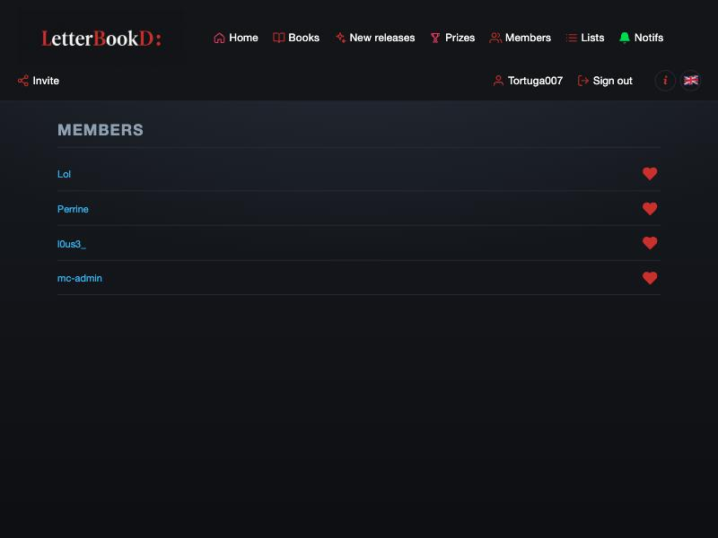

Members
Why it exists: Keep track of the people in your club: see their reads, reviews and lists, and keep up with their new favorites. You only see members you share at least one club with.

Walkthrough
This is a simple list: one row per member, with a clickable username that opens their profile. On the right, a heart lets you mark a member as 'followed'. This is what feeds the 'Members I follow' section on your home page.
Members with no club in common do not appear here (letterbookd's visibility rule).
Action chains
Each row describes a trigger in the UI, the modal or form it opens, and the resulting effect.
| Trigger | Modal / Fields | Effect |
|---|---|---|
| Member's username | — | Opens the member's profile: their lists, reads and reviews, filtered to the clubs you share. |
| Heart icon on the right of a member | — | Follows or unfollows the member. A followed member appears at the top of your home page ('Members I follow'), and you receive their new reviews first in Notifs. |